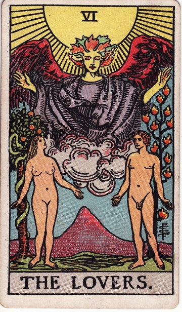
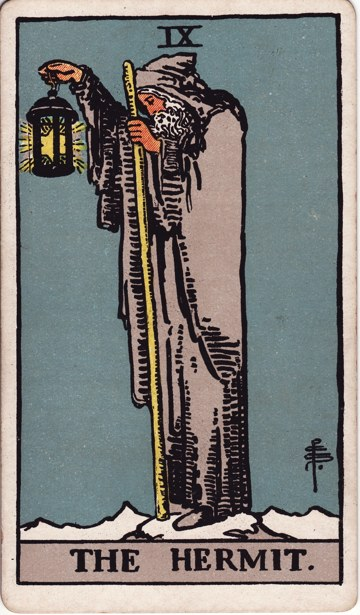
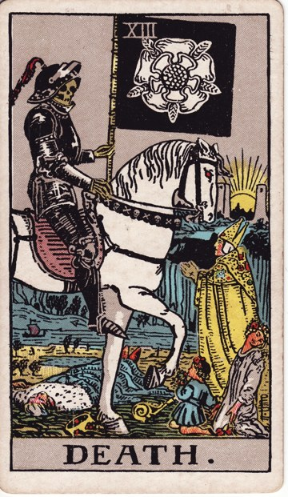

Таро · Модуль 1 — предварительный дизайн
«Введение в Таро: история и основы» · 11 слайдов · светло-голубой · черновик раскладки и стиля · дизайн Янита Войт
Слайд 1 · Титульный
Модуль 1 · Введение в Таро
Таро: магия символов
или инструмент самопознания?




Откройте язык архетипов и научитесь читать символы
Слайд 2 · Миф vs Реальность
Миф vs Реальность
Откуда на самом деле Таро?
✦
Мифы
🔺 «Книга Тота из Древнего Египта»
🌊 «Знания с затонувшей Атлантиды»
🔮 «Цыганские гадания»
Факты
🏰 Первые колоды — Италия, XV век
🃏 Эволюция из обычных игральных карт
📜 Первое упоминание — 1367, Берн
Слайд 3 · Эволюция во времени
Путешествие во времени
Эволюция Таро · XIV–XXI вв.
1440
Висконти-Сфорца — первые расписные миниатюры
1781
Кур де Жебелен — Таро как «древняя мудрость»
1910
Уэйт–Смит — самая известная колода
2020-е
Современные авторские колоды
Слайд 4 · Структура колоды
Структура колоды
78 карт — 78 ключей к себе и миру
✦
22
Старшие Арканы
Путь души — ключевые этапы
56
Младшие Арканы
4 масти — повседневная жизнь
16
Карты Двора
Паж · Рыцарь · Королева · Король
22 + 56 + 16 = 78
Слайд 5 · Масти и стихии
Масти и стихии
Угадай масть по описанию
✦
🔥
Жезлы
Страсть, амбиции, новые проекты · Огонь
💧
Кубки
Любовь, дружба, творчество · Вода
🌬️
Мечи
Конфликты, решения, ясность · Воздух
🪙
Пентакли
Деньги, здоровье, стабильность · Земля
Слайд 6 · Карта-загадка
Загадка
Что объединяет эти карты?
Они все про конец чего-то
Это карты про путешествия
Это Старшие Арканы — ключевые этапы пути ✓

Слайд 7 · Карты Двора
Карты Двора
Кто есть кто
✦
Паж
Курьер судьбы: новости и возможности
Рыцарь
Герой действия: импульс, движение, риск
Королева
Мудрая наставница: глубина, интуиция
Король
Стратег: власть, структура, контроль
«Я зажигаю огонь вдохновения!» — Король Жезлов
Слайд 8 · Прямые vs перевёрнутые
Эксперимент
Прямые vs перевёрнутые
Прямая карта вызывает у меня чувство…
Перевёрнутая — ощущение…
Перевёрнутые часто показывают блоки, страхи или искажение энергии.
Слайд 9 · Выбери свою колоду
Тест
Какая колода откликается вам?
✦
Райдер–Уэйт
Классика, детальные сюжеты · «Люблю чёткие символы»
Марсельское
Геометричные образы · «Предпочитаю традиции»
Авторская
Магия и фантазия · «Хочу свой стиль»
Ваша колода — отличный старт для интуитивного чтения!
Слайд 10 · Практическое задание
Практика
Дневник первой встречи
Вытяните 3 карты Старших Арканов и заполните дневник:
| Карта | Образы | Ассоциации | Вопрос к себе |
|---|
| Карта 1 | что изображено? | какие эмоции? | … |
| Карта 2 | … | связь с ситуацией | … |
| Карта 3 | … | какой совет даёт? | … |
Слайд 11 · Итоги + вызов
Итоги
Что вы узнали
✦ Развенчали мифы о Таро
✦ Изучили структуру колоды
✦ Выбрали свою первую колоду
Вызов недели: носите одну карту с собой и отмечайте, как её энергия проявляется в событиях дня.
«Символы ведут нас туда, куда не доведёт логика» — К. Г. Юнг